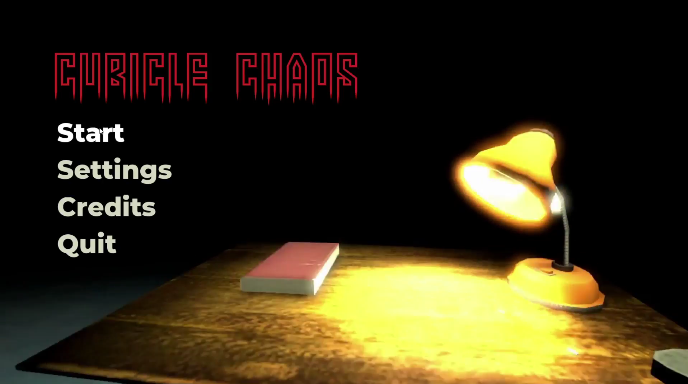
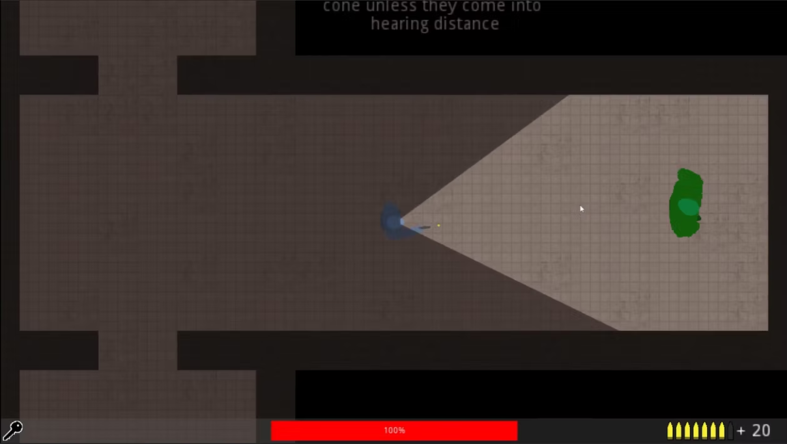
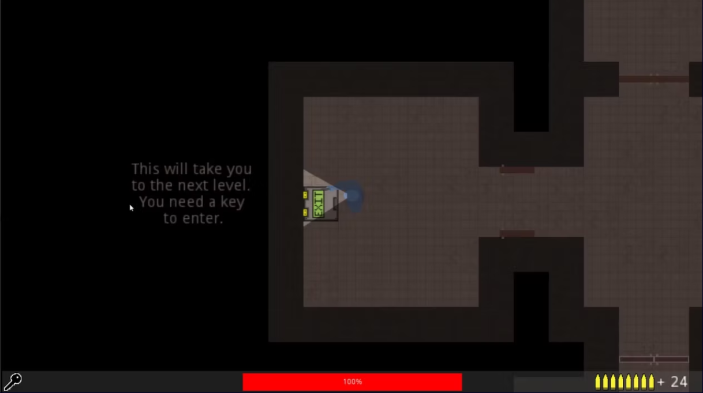

Featured Project
Cubical Chaos
Genre: Top Down Roguelike Shooter
Developed: December 2023
Cubical Chaos is a roguelike shooter set in an abandoned corporate office. The goal is to escape the office without getting hit by zombies. To leave each floor, the player must find a key that unlocks the door to the next floor. Every level becomes more difficult with more zombies, more obstacles, and tougher enemies. The player uses a gun for defense, while ammo boxes and health kits are scattered throughout the office.
Back to homepage
Gallery
Gameplay Screenshots
Screenshots of gameplay moments from Cubical Chaos.


Video
Demo Video
The full demo video of Cubical Chaos that shows gameplay, mechanics, and environments.